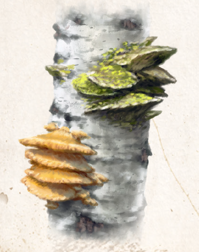

Der Zunderschwamm ist ein Pilz, der in ganz Aventurien südlich des Blauen Sees wächst. Er kann bis zu 30 Jahre alt werden und schmarotzt an lebenden, aber geschwächten Bäumen - vorzugsweise an Buchen und Birken -, deren Holz er nach und nach zersetzt. Er ist ein typischer Bewohner älterer Wälder und dringt über Astund Stammwunden in seinen Wirt ein. Dabei verursacht er intensive Fäulnisprozesse im Kernholz, und häufig bricht ein befallener Baum in mehreren Schritt Höhe unter seinem eigenen Gewicht. Der junge Zunderschwamm weist zunächst eine samtige und gelbliche Oberfläche auf, die im Alter zu Grün- und Grautönen wechselt. Seine Unterseite ist leicht nach innen gewölbt und besteht aus einer glatten, ockerbraunen Porenschicht. Die Beschaffenheit des Fruchtkörpers ist korkartig, und er kann ein Gewicht von bis zu fünf Stein erreichen. Ein Großteil dieses Gewichts ist jedoch Feuchtigkeit, die er einem Schwamm gleich aufsaugt.
Es ist die locker-filzige Mittelschicht, die sogenannte Trama des Pilzes, auf die Mensch, Zwerg und Elf aus sind. Sie wird nach der Ernte sorgsam weichgeklopft und dann in einer starken Salzlake eingeweicht. Nachdem sie gesättigt ist, wird die Trama getrocknet und verliert dabei zwei Drittel ihres Gewichts. Einmal trocken, glimmt der Zunder beim kleinsten Funken und hält dieses Glimmen auch recht lange. Ein auf diese Weise behandelter Zunderschwamm ist beinahe unbegrenzt haltbar, sofern er trocken gelagert wird, denn nach wie vor zieht er Feuchtigkeit an.
Verbreitung:
Landschaftstyp: Wälder, Regenwälder, Maraskan
Regionen: Wälder des Nordens, Mittelländische Wälder (gemäßigtes, tobrisches und yaquirisches Klima), Immergrüne Wälder (Südosten) (alle gewöhnlich), Überhoher, Mittelhoher und halbhoher Regenwald, Regengrüner Wald, Nebelwald, Strandwald, auf Maraskan (jeweils gelegentlich)
Suchschwierigkeit: -1
Bestimmungsschwierigkeit: -1
Anwendungen: 1/2/3/4/5/6
Wirkung:
Roh:
Berührung: Wenn in feuchter Umgebung, tritt ggf. Flüssigkeit aus.
Einatmung: keine
Verzehr: keine
Verarbeitet: siehe Rezepte
Preis: 0,1 / 0,2 Silbertaler (reicht für ca. 25 Portionen Zunder)
Rezepte:
Pflanzliche Hilfsmittel: Scherzschwamm, Schwammzunder
Volksbrauchtum:
Im Dominium Donnerbach, Greifenfurt und Weiden wird Zunderschwamm auch zu „Pilzleder“ verarbeitet.
Dieses erinnert je nach Güte an Wildleder oder Filz und fühlt sich weich an.
Vorzugsweise werden Kappen, Taschen und Köcher daraus gefertigt.
Auch in die Volksheilkunde hat der Schwamm Eingang gefunden.
Die Trama wird als blutstillende Wundauflage geschätzt und getrocknet als Tee gegen Entzündungen verordnet.
Haltbarkeit:
Roh: siehe Haltbarmachung